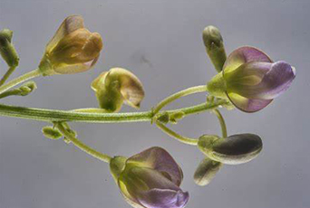

Specie: Vigna radiata
Taxonomy: Fabaceae; Papilionoideae; 50 kb inversion clade; NPAAA clade; indigoferoid/millettioid clade; Phaseoleae; Vigna
Abbr: Vra
Level: Chromosome
chromosome number: 2n=2X=22

Introduction: The mung bean (Vigna radiata), alternatively known as the green gram, maash (Persian: ماش٫ Kurdish: ماش)٫ mūng (Hindi: मूंग), monggo, or munggo (Philippines), is a plant species in the legume family. The mung bean is mainly cultivated in East, Southeast and South Asia. It is used as an ingredient in both savoury and sweet dishes. The green gram is an annual vine with yellow flowers and fuzzy brown pods. The English word mung originated from the Hindi word mūṅg, which is derived from the Sanskrit word mudga.
Distribution: Assam, Bangladesh, India, Laos, Lesser Sunda Is., Myanmar, New South Wales, Northern Territory, Pakistan, Queensland, Sri Lanka, Taiwan, Thailand, Vietnam, West Himalaya, Western Australia, Yemen
Article Title: High-quality genome assembly and pan-genome studies facilitate genetic discovery in mung bean and its improvement
Data source: These sequence data have been submitted to the NCBI BioProject database (https://www.ncbi.nlm.nih.gov/bioproject/) under accession number PRJNA802060 and the National Genomics Data Center BioProject database (https://ngdc.cncb.ac.cn/bioproject/) under accession number PRJCA008996 (GSA: CRA006590). The genome assembly sequences, gene annotation, and supplemental data can be accessed from the FigShare database (https://doi.org/10.6084/m9.figshare.19583446).